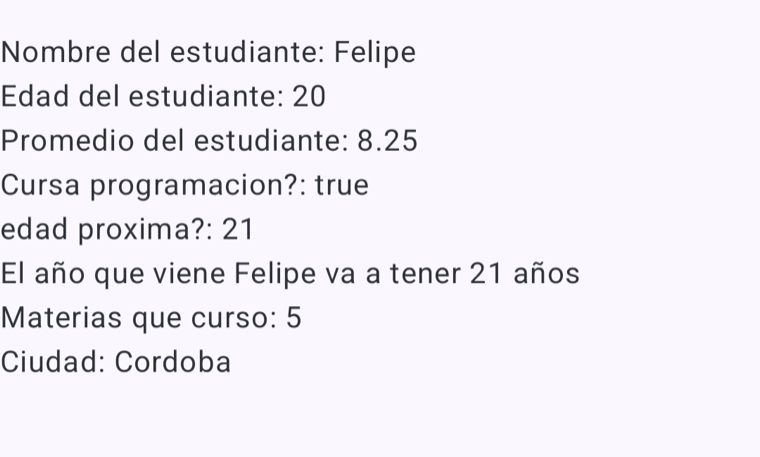
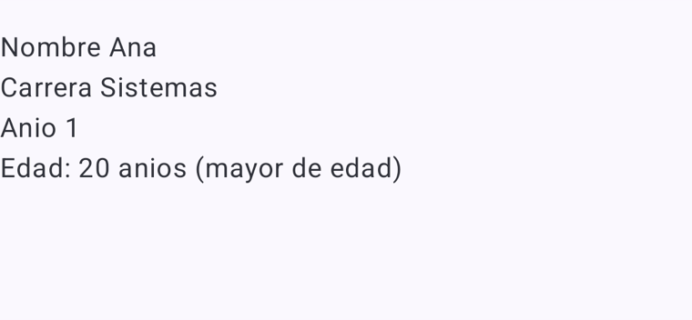
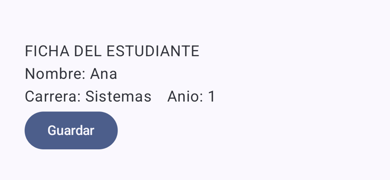
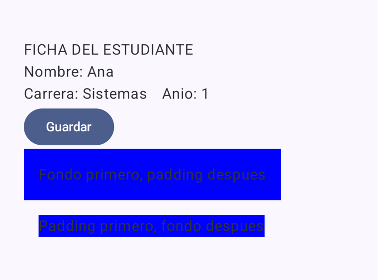
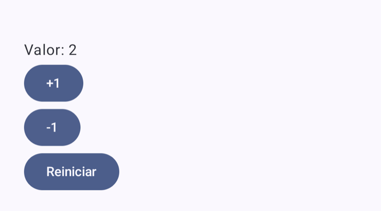
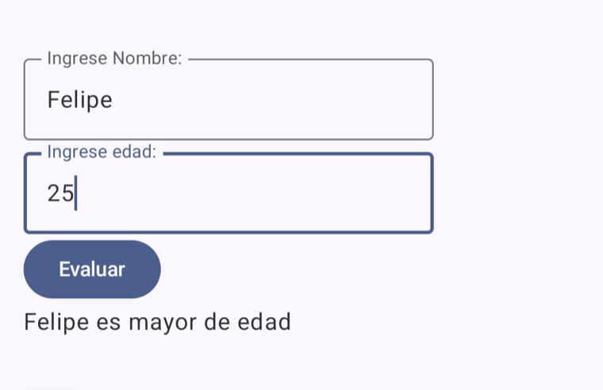
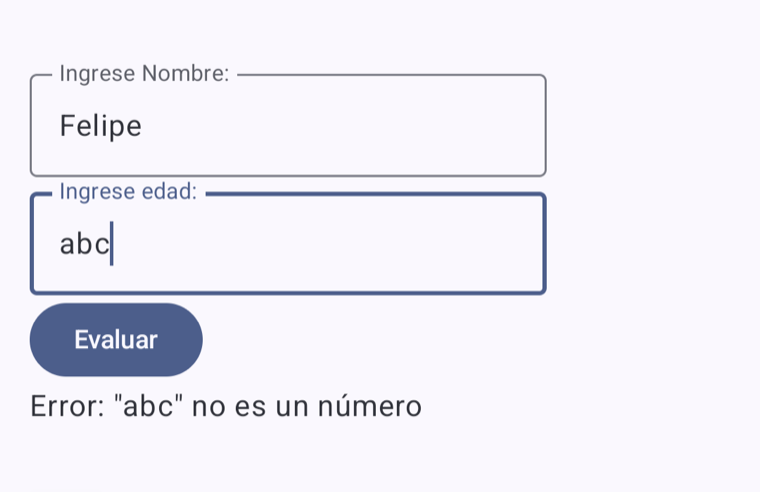
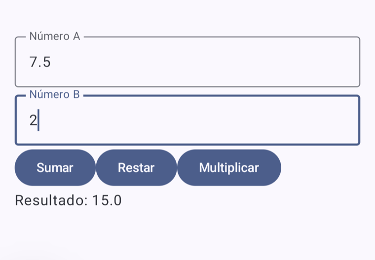

Ejecutado en el AVD: “Hola Android – Felipe”
Desarrollo de Aplicaciones I · UADE · Trabajo Práctico “Práctica Incremental” (Guía de Ejercicios 00, v1.2)
Repositorio: EJERCICIOS-GUIA · una rama por ejercicio (ejercicio-01-… a ejercicio-13-…) · Felipe Forte
Cómo leer estos apuntes. La Parte 1 explica la teoría que hace falta para la guía y resume los temas más importantes. La Parte 2 recorre los ejercicios uno por uno: qué pide la guía, “En pocas palabras”, “Importante a considerar”, el código real de la rama, las pruebas en el emulador, las preguntas de la guía y el criterio de finalización. Al final hay anexos (organización, cómo probar, preguntas transversales, registro de IA, revisión del código) y el glosario.
En la tabla “Lo que pide la guía”: ✅ cumplido y probado en el emulador · 🔧 corregido en la revisión · 🧑💻 se demuestra en vivo en Android Studio.
ejercicio-13-organizador-cursada.Fuentes: Resumen Teoría Android — DA1, Apuntes de Clase: Jetpack Compose, Ciclo de vida Android y la introducción de la guía. La guía no presupone conocimiento previo de Kotlin: el objetivo es leer código, navegar Android Studio, reconocer el SDK de Android, usar el emulador y entender el modelo declarativo de Compose.
Android es un sistema operativo móvil en capas: kernel Linux (memoria, procesos, drivers) → HAL (un módulo por hardware) → librerías → Application Framework (Activity Manager, Window Manager…) → aplicaciones. Como desarrolladores trabajamos arriba de todo, con el Android SDK. Cada app corre aislada (sandbox) y necesita permisos para recursos sensibles.
| Pieza | Qué es |
|---|---|
| Android Studio | IDE para escribir, compilar, ejecutar y depurar (Build, Run, Logcat, Debugger, Device Manager). |
| Gradle | Compila el proyecto y baja bibliotecas. Se configura en build.gradle.kts. |
| AVD / emulador | El AVD es la configuración de un teléfono virtual; el emulador es el programa que lo ejecuta. |
| Manifest | AndroidManifest.xml: nombre, ícono, permisos y Activity de inicio (MAIN + LAUNCHER). |
| Compilación | .kt → .class → .dex (D8/R8) → APK firmado → el runtime ART lo ejecuta (JIT + AOT). |
En Android la app no es dueña de su proceso: el sistema puede pausarla, detenerla o matarla para liberar memoria. Por eso
la Activity pasa por estados con callbacks en pares simétricos:
onCreate() ↔ onDestroy() existencia (en onCreate va setContent { ... })
onStart() ↔ onStop() visibilidad
onResume() ↔ onPause() foco / interacción
Al rotar, la Activity se destruye y se vuelve a crear: lo que estaba solo en memoria de la pantalla se pierde (esto vuelve en las guías de persistencia y MVVM).
val (no se reasigna) y var (se puede reasignar). El tipo se infiere: val edad = 20 es Int.String, Int, Double, Boolean. Plantillas: "Edad: $edad", "${edad + 1}".fun descripcionEdad(edad: Int): String. if y when devuelven valores.Int? puede valer null; "abc".toIntOrNull() devuelve null en vez de romper.data class para datos (genera equals, toString, copy); List, filter, size para colecciones.Compose construye la interfaz con funciones Kotlin marcadas con @Composable. En lugar de buscar una vista y modificarla
(enfoque imperativo con XML), se describe qué debe mostrarse según el estado actual (enfoque declarativo).
class MainActivity : ComponentActivity() {
override fun onCreate(savedInstanceState: Bundle?) {
super.onCreate(savedInstanceState)
setContent { MaterialTheme { PantallaPrincipal() } } // Activity → setContent → composables
}
}
Column (vertical), Row (horizontal), Box (superpone), LazyColumn (listas largas).modifier: Modifier = Modifier.var x by remember { mutableStateOf(...) }. Al cambiar, Compose recompone lo que lo lee.onValueChange, onClick).Button, Card, Checkbox, Switch…) y tema (colores, tipografía, modo oscuro).Evento (onClick) → cambia el estado → Compose recompone → la pantalla muestra el valor nuevo
res/values/strings.xml y se leen con stringResource(R.string.x). Android elige
la variante según idioma o tema (values-en/, modo oscuro) sin tocar el código.LocalContext.current.Log.d("ETIQUETA", ...) para seguir la ejecución; breakpoints para pausar y mirar variables.| Kotlin | Jetpack Compose | Android SDK |
|---|---|---|
val, var, fun, if, when, data class, List, filter, toIntOrNull(), apply |
@Composable, @Preview, Text, Button, Column, Row, Modifier, remember, mutableStateOf, LazyColumn, stringResource, LocalContext |
Activity, Context, Intent, Uri, Log, R.string, AndroidManifest.xml |
mutableStateOf Compose no se entera; sin remember el valor se reinicia.data class y funciones puras (calcular, validar) fuera de los composables.toIntOrNull, isBlank).Cada ejercicio vive en su propia rama del repositorio y contiene solo el código de ese ejercicio (en MainActivity.kt). Las pruebas se hicieron en un emulador Pixel 8.
Consigna: Recorrer el panel Project, ubicar MainActivity.kt, AndroidManifest.xml y el Gradle del módulo app, crear un AVD, ejecutar y ubicar dónde se ve la compilación. Después cambiar el texto a Hola Android – <nombre>.
Rama: ejercicio-01-explorar-ide
| Lo que pide la guía | Dónde / cómo | |
|---|---|---|
| Recorrer la vista Android y ubicar MainActivity.kt, AndroidManifest.xml y el Gradle del módulo | 🧑💻 | Tabla de ubicaciones en este ejercicio |
| Abrir Device Manager y crear un AVD | 🧑💻 | Pixel 8 virtual |
| Ejecutar la app e identificar dónde aparece la compilación | ✅ | Ventana Build; la app corre en el AVD |
| Mostrar “Hola Android – <nombre>” | 🔧 | Text("Hola Android – $name") |
| Responder las 5 preguntas | ✅ | Más abajo |
setContent { } reemplaza al viejo setContentView(R.layout...): todo lo de adentro es la interfaz en Compose.innerPadding es el espacio que deja el Scaffold para no quedar debajo de la barra de estado; por eso se pasa como Modifier.padding(innerPadding).class MainActivity : ComponentActivity() {
override fun onCreate(savedInstanceState: Bundle?) {
super.onCreate(savedInstanceState)
enableEdgeToEdge() // dibuja detrás de las barras del sistema
setContent { // desde acá, interfaz en Compose
EjerciciosKotlinTheme { // colores y tipografía de la app
Scaffold(modifier = Modifier.fillMaxSize()) { innerPadding ->
Greeting(name = "Felipe", modifier = Modifier.padding(innerPadding))
}
}
}
}
}
@Composable
fun Greeting(name: String, modifier: Modifier = Modifier) {
Text(text = "Hola Android – $name", modifier = modifier)
}| Archivo o herramienta | Dónde está |
|---|---|
MainActivity.kt | app → kotlin+java → com.example.ejercicioskotlin |
AndroidManifest.xml | app → manifests |
| Gradle del módulo | Gradle Scripts → build.gradle.kts (Module :app) |
| Device Manager | barra lateral derecha (ícono de teléfono) o Tools → Device Manager |
"Hello $name!"; se cambió a "Hola Android – $name" como pide la consigna.1. ¿Qué archivo contiene el código Kotlin principal?MainActivity.kt: tiene la Activity que arranca la app y los composables de la pantalla.
2. ¿Qué diferencia hay entre hacer Run y abrir solamente un Preview?
Run compila, instala y ejecuta la app completa en el AVD (con su ciclo de vida, clics, Intents). Preview solo dibuja un composable dentro de Android Studio: es más rápido pero no ejecuta la app.
3. ¿Qué es un AVD? ¿Es lo mismo que el emulador?
No. El AVD es la configuración de un dispositivo virtual (modelo, pantalla, versión de Android); el emulador es el programa que lo hace correr.
4. ¿Qué API de Android utiliza el dispositivo virtual?
Se ve en Device Manager, columna API. (Las pruebas de estos apuntes se hicieron en un Pixel 8 virtual.)
5. ¿Qué ocurre si el AVD está apagado cuando se presiona Run?
Android Studio lo inicia automáticamente y, cuando terminó de arrancar, instala y abre la app (tarda más la primera vez).
Consigna: Crear Presentacion() con tres textos (nombre, carrera, tecnología a aprender), usarla en la pantalla y en un @Preview. Experimentar: quitar @Composable, escribir mal Text, poner dos Text sin layout.
Rama: ejercicio-02-presentacion
| Lo que pide la guía | Dónde / cómo | |
|---|---|---|
Composable Presentacion con tres textos (nombre, carrera, tecnología) | ✅ | Presentacion() con Column |
| Usarla desde la interfaz principal | ✅ | setContent → Presentacion(...) |
Función con @Preview | ✅ | PresentacionPreview() |
| Experimentación: quitar @Composable, escribir mal Text, dos Text sin layout | 🧑💻 | Errores esperados explicados en las aclaraciones |
Column porque, sin layout, los textos se dibujan uno encima del otro.@Composable el compilador marca error en Text(...): “@Composable invocations can only happen from the context of a @Composable function”.Text (ej. Txt) da “Unresolved reference”: el nombre no existe.Text sin layout se superponen en la esquina; Column los apila verticalmente.PresentacionPreview) que solo existe para el editor; la app no la usa.@Composable
fun Presentacion(modifier: Modifier = Modifier) {
Column(modifier = modifier) {
Text(text = "Felipe")
Text(text = "Ingeniería en Sistemas")
Text(text = "Quiero aprender Kotlin")
}
}
@Preview(showBackground = true)
@Composable
fun PresentacionPreview() {
EjerciciosKotlinTheme { Presentacion() }
}
1. ¿Por qué una función @Composable puede llamar a Text() y una común no?
Porque Text también es @Composable: necesita el contexto de composición que Compose le pasa solo a otras funciones @Composable. Una función común no lo tiene.
Presentacion() se usa desde la pantalla de la app y desde un @Preview.Consigna: Pantalla “Ficha del estudiante” con datos de distintos tipos mostrados con plantillas de String, más una variable calculada. Parte B: tipos explícitos e inferidos.
Rama: ejercicio-03-tipos-de-datos
| Lo que pide la guía | Dónde / cómo | |
|---|---|---|
Ficha con datos val de distintos tipos | ✅ | String, Int, Double, Boolean |
| Mostrarlos con plantillas de String | ✅ | "Nombre: $nombre" |
| Variable calculada y frase que combine texto y expresión | 🔧 | anioProximo y "... ${edad + 1} años" |
| Parte B: variables con tipo explícito y comparación | 🔧 | val materias: Int = 5, val ciudad: String |
| Responder las 4 preguntas | ✅ | Más abajo |
String, Int, Double, Boolean) con val, uno calculado (edad + 1), y se muestran con "$variable".val no se puede reasignar; var sí. Por defecto conviene val.val edad = 20 Kotlin deduce que es Int mirando el valor. Es lo mismo que escribir val edad: Int = 20."$edad" inserta el valor; para expresiones se usan llaves: "${edad + 1}".8.25 es Double (con decimales); true/false es Boolean.val nombre = "Felipe" // String
val edad = 20 // Int
val promedio = 8.25 // Double
val cursaProgramacion = true // Boolean
val anioProximo = edad + 1 // calculada
val materias: Int = 5 // Parte B: tipo explícito
val ciudad: String = "Cordoba"
Text("Nombre del estudiante: $nombre")
Text("edad proxima?: $anioProximo")
Text("El año que viene $nombre va a tener ${edad + 1} años") // texto + expresión
Parte B (agregada a la rama): val materias: Int = 5 y val ciudad: String = "Cordoba" son equivalentes a escribirlos sin el tipo; el tipo explícito sirve para documentar o cuando todavía no hay valor inicial.
1. ¿Cuándo usarías val?
Para todo dato que no cambia después de asignarse (la mayoría). Hace el código más predecible.
2. ¿Cuándo sería necesario var?
Cuando el valor tiene que cambiar, por ejemplo un contador que se incrementa.
3. ¿Qué significa que Kotlin “infiera” un tipo?
Que lo deduce del valor asignado, sin que haya que escribirlo.
4. ¿Por qué "20" y 20 no representan lo mismo?"20" es un String (texto: no se puede sumar como número) y 20 un Int. "20" + 1 da "201"; 20 + 1 da 21.
Consigna: Composable reutilizable DatoEstudiante(etiqueta, valor) usado varias veces y una función Kotlin común descripcionEdad(edad): String. Desafío: indicar mayor/menor de edad con if.
Rama: ejercicio-04-funciones-con-parametros
| Lo que pide la guía | Dónde / cómo | |
|---|---|---|
Composable reutilizable DatoEstudiante(etiqueta, valor) | ✅ | Usado tres veces |
Función Kotlin no composable descripcionEdad(edad): String | ✅ | Mostrada con Text(...) |
Desafío: indicar mayor de edad con if | ✅ | return if (edad >= 18) ... else ... |
etiqueta es el parámetro (el hueco); "Nombre" es el argumento (lo que se pasa).descripcionEdad devuelve un String y quien la llama decide mostrarlo con Text.if como expresión: en Kotlin if devuelve un valor, por eso se puede escribir return if (...) "a" else "b".@Composable
fun DatoEstudiante(etiqueta: String, valor: String) {
Text("$etiqueta $valor")
}
fun descripcionEdad(edad: Int): String {
return if (edad >= 18) "Edad: $edad anios (mayor de edad)"
else "Edad: $edad anios (menor de edad)"
}
DatoEstudiante("Nombre", "Ana"); DatoEstudiante("Carrera", "Sistemas"); DatoEstudiante("Anio", "1")
Text(descripcionEdad(20))
if).Consigna: Rediseñar la ficha con título, datos verticales, una fila con dos elementos, padding y un Button. Experimento: cambiar el orden de dos modificadores.
Rama: ejercicio-05-modificadores
| Lo que pide la guía | Dónde / cómo | |
|---|---|---|
| Título y datos organizados verticalmente | ✅ | Column |
| Al menos una fila con dos elementos | ✅ | Row con Carrera y Año |
| Espaciado exterior con padding | ✅ | padding(innerPadding).padding(26.dp) |
Un Button sin comportamiento relevante | ✅ | Button({}) { Text("Guardar") } |
| Experimento obligatorio: cambiar el orden de dos modificadores | ✅ | Dos @Preview con background/padding en distinto orden |
Column apila, Row pone lado a lado y Modifier ajusta tamaño y márgenes. El experimento muestra que el orden de los modificadores cambia el resultado.background y después padding: el color cubre todo y el texto queda separado del borde. Al revés, primero se reserva el margen (sin color) y el fondo pinta solo lo de adentro.Arrangement.spacedBy(16.dp) separa los hijos de un Row/Column sin poner padding a cada uno.dp es una unidad independiente de la densidad de la pantalla: se ve del mismo tamaño en distintos teléfonos.Column(modifier = Modifier.padding(innerPadding).padding(all = 26.dp)) {
Text("FICHA DEL ESTUDIANTE")
DatoEstudiante("Nombre:", "Ana")
Row(horizontalArrangement = Arrangement.spacedBy(16.dp)) {
DatoEstudiante("Carrera:", "Sistemas")
DatoEstudiante("Anio:", "1")
}
Button({}) { Text("Guardar") } // todavía sin comportamiento
}
// Experimento (dos @Preview en la rama):
Modifier.background(Color.Blue).padding(16.dp) // fondo primero
Modifier.padding(16.dp).background(Color.Blue) // padding primero

Para la captura del experimento se mostraron temporalmente los dos previews en la app (sin modificar la rama). Se ve que en el segundo caso el azul queda “pegado” al texto: el margen quedó afuera, sin color.
1. ¿El orden de los Modifier puede afectar la interfaz?
Sí. Cada modificador se aplica sobre el resultado del anterior, así que background antes o después de padding pinta áreas distintas (lo mismo pasa con clickable y padding: cambia la zona que responde al toque).
Column, Row, más de tres modificadores (padding, background, fillMaxSize…) y un componente Material 3 además de Text (Button).Consigna: Contador con texto, +1, -1 y Reiniciar, que nunca baje de cero.
Rama: ejercicio-06-contador
| Lo que pide la guía | Dónde / cómo | |
|---|---|---|
| Texto con el valor y botones +1, -1 y Reiniciar | ✅ | Contador() |
Estado con remember + mutableStateOf | ✅ | var contador by remember { ... } |
| Nunca menor que cero | ✅ | if (contador > 0) contador-- (probado) |
| Responder las 4 preguntas conceptuales | ✅ | Más abajo |
var contador by remember { mutableStateOf(0) }. Cada botón cambia el estado, Compose detecta el cambio y redibuja el Text.contador++ (evento), cambia el valor observado (estado) y Compose vuelve a ejecutar Contador() (recomposición), que ahora muestra el número nuevo.remember, cada recomposición volvería a crear el estado en 0.mutableStateOf, cambiar la variable no avisaría a Compose y la pantalla no se actualizaría.if (contador > 0) antes de decrementar.@Composable
fun Contador() {
var contador by remember { mutableStateOf(0) }
Text("Valor: $contador")
Button(onClick = { contador++ }) { Text("+1") }
Button(onClick = { if (contador > 0) contador-- }) { Text("-1") }
Button(onClick = { contador = 0 }) { Text("Reiniciar") }
}
1. ¿Por qué un val contador = 0 no alcanza?
Porque val no se puede cambiar y, aunque fuera var común, Compose no se enteraría del cambio ni redibujaría.
2. ¿Qué ocurre cuando cambia el estado?
Compose marca para recomponer las funciones que lo leen y las vuelve a ejecutar con el valor nuevo.
3. ¿Qué parte de la interfaz depende de contador?
El Text("Valor: $contador"); los botones no cambian.
4. ¿Diferencia entre cambiar una variable y una variable de estado observada?
Una variable común cambia en memoria sin consecuencias visibles; una de estado avisa a Compose, que redibuja lo que la usa.
Consigna: “Clasificador de edad”: campos nombre y edad, botón Evaluar y resultado (error si no es número, inválido si es negativo, menor o mayor de edad). Desafío: usar when.
Rama: ejercicio-07-textfield-nullsafety
| Lo que pide la guía | Dónde / cómo | |
|---|---|---|
| Campos nombre y edad, botón Evaluar y resultado | 🔧 | Ahora el resultado usa el nombre |
toIntOrNull() y error si no es número | 🔧 | Mensaje propio para texto no numérico |
| Negativo → no válido; < 18 → menor; si no → mayor | ✅ | Probado con -3, 15 y 25 |
| Campo vacío sin cerrarse | 🔧 | Mensaje propio para campo vacío |
Desafío: reemplazar los if por when | ✅ | resultado = when { ... } |
toIntOrNull() y se clasifica con un when. Ningún caso cierra la app.OutlinedTextField no guarda nada solo: muestra value y avisa cada tecla con onValueChange; el estado lo guarda quien lo usa.toIntOrNull() devuelve Int?: el número, o null si el texto no es un entero. toInt() en cambio cerraría la app con una excepción.when importa: primero se pregunta por null; después de esa rama Kotlin ya sabe que es un Int (smart cast) y deja comparar < 0.when sin argumento es como una cadena de if / else if, pero más legible y devuelve un valor.var edadTexto by remember { mutableStateOf("") }
var resultado by remember { mutableStateOf("") }
Button(onClick = {
val edadNumero = edadTexto.toIntOrNull()
val quien = nombre.trim().ifBlank { "La persona" }
resultado = when {
edadTexto.isBlank() -> "Error: no se ingresó ninguna edad"
edadNumero == null -> "Error: "$edadTexto" no es un número"
edadNumero < 0 -> "Dato no valido"
edadNumero < 18 -> "$quien es menor de edad"
else -> "$quien es mayor de edad"
}
}) { Text("Evaluar") }

| Edad ingresada (probado) | Resultado |
|---|---|
| 25 | Felipe es mayor de edad |
| 15 | Felipe es menor de edad |
| -3 | Dato no valido |
| abc | Error: "abc" no es un número |
| (vacío) | Error: no se ingresó ninguna edad |
edadTexto.isBlank() y cada error tiene su texto.Column usaba Modifier.padding(16.dp) e ignoraba el modifier recibido, así que se perdía el innerPadding y el formulario quedaba debajo de la barra de estado. Ahora es modifier.padding(16.dp).1. ¿Qué devuelve toIntOrNull() y por qué su tipo tiene “?”?
Devuelve Int?: el número si el texto es un entero válido, o null si no. El ? indica que null es un valor posible y Kotlin obliga a manejarlo. Ejemplos: "25" → 25, "abc" → null, "" → null.
when.Consigna: Calculadora de dos números (sumar, restar, multiplicar) con la lógica en una función separada. Parte B: breakpoint en la función. Parte C: log con etiqueta CALCULADORA.
Rama: ejercicio-08-calculadora-debugger-logcat
| Lo que pide la guía | Dónde / cómo | |
|---|---|---|
| Sumar, restar y multiplicar | ✅ | Probado con 7.5 y 2 |
| Lógica en una función separada de la interfaz | ✅ | calcular(a, b, operacion) |
| Parte B: breakpoint, Debug e inspección de a, b, operacion | 🧑💻 | Pasos y valores esperados explicados |
| Parte C: log con etiqueta y filtro en Logcat | ✅ | Log.d("CALCULADORA", ...) (salida real abajo) |
calcular(), una función pura (sin Compose); la pantalla solo valida y muestra. Cada operación deja un mensaje en Logcat.ejecutar() dentro del composable: evita repetir la validación en los tres botones.return when (operacion), ejecutar con Debug (ícono del bichito), tocar un botón; la app se pausa y en el panel Variables se ven a, b y operacion. Resume (F9) continúa.tag:CALCULADORA para ver solo esos mensajes.fun calcular(a: Double, b: Double, operacion: String): Double {
return when (operacion) { // ← breakpoint acá
"sumar" -> a + b
"restar" -> a - b
"multiplicar" -> a * b
else -> 0.0
}
}
fun ejecutar(operacion: String) { // dentro de Calculadora()
val a = textoA.toDoubleOrNull(); val b = textoB.toDoubleOrNull()
if (a == null || b == null) { resultado = "Error: ingresá dos números válidos"; return }
val valorCalculado = calcular(a, b, operacion)
Log.d("CALCULADORA", "a=$a b=$b operacion=$operacion resultado=$valorCalculado")
resultado = valorCalculado.toString()
}
Logcat (tag:CALCULADORA), con A = 7.5 y B = 2: D CALCULADORA: a=7.5 b=2.0 operacion=sumar resultado=9.5 D CALCULADORA: a=7.5 b=2.0 operacion=restar resultado=5.5 D CALCULADORA: a=7.5 b=2.0 operacion=multiplicar resultado=15.0 B = "x" → Resultado: Error: ingresá dos números válidos
El breakpoint se demuestra en vivo con Android Studio (la guía pide mostrarlo y explicar los valores). Con 7.5 y 2 y “Multiplicar”, al pausar se ve a = 7.5, b = 2.0 (el 2 se convirtió a Double) y operacion = "multiplicar".
Un solo proyecto Android (com.example.ejercicioskotlin) y una rama por ejercicio; cada rama tiene
solo el código de su ejercicio en MainActivity.kt (la guía permite trabajar así: “reutilizar un mismo proyecto y crear una pantalla
o archivo Kotlin nuevo para cada actividad”).
| Rama | Ejercicio |
|---|---|
ejercicio-01-explorar-ide | 1 — Primer proyecto, emulador y recorrido del entorno |
ejercicio-02-presentacion | 2 — Primeros pasos con funciones @Composable |
ejercicio-03-tipos-de-datos | 3 — Kotlin: val, var, tipos y plantillas de String |
ejercicio-04-funciones-con-parametros | 4 — Funciones, parámetros y componentes reutilizables |
ejercicio-05-modificadores | 5 — Column, Row, Modifier y Material 3 |
ejercicio-06-contador | 6 — Estado, botones y recomposición: contador |
ejercicio-07-textfield-nullsafety | 7 — TextField, if/when y null safety |
ejercicio-08-calculadora-debugger-logcat | 8 — Calculadora pequeña, Logcat y debugger |
ejercicio-09-dataclass-list-lazycolumn | 9 — data class, List y LazyColumn |
ejercicio-10-lista-editable-tareas | 10 — Lista editable: tareas del estudiante |
ejercicio-11-recursos-configuracion-visual | 11 — Recursos Android y configuración visual |
ejercicio-12-context-intents | 12 — Primer contacto con el Android SDK: Context e Intents |
ejercicio-13-organizador-cursada | 13 — Miniaplicación integradora: organizador de cursada |
app/src/main/ ├── AndroidManifest.xml ├── java/com/example/ejercicioskotlin/ │ ├── MainActivity.kt # el ejercicio de la rama │ └── ui/theme/ # Color.kt, Theme.kt, Type.kt └── res/values/strings.xml # (+ values-en/ en los Ej 11 y 13)
git clone https://github.com/feliforte14/EJERCICIOS-GUIA.git cd EJERCICIOS-GUIA git switch ejercicio-13-organizador-cursada # o la rama del ejercicio
tag:CALCULADORA, tag:ORGANIZADOR).| Pregunta | Respuesta |
|---|---|
| 1–3. ¿Qué es Kotlin puro, qué es Compose y qué depende del Android SDK? | Ver la tabla del glosario. Ejemplos del proyecto: calcular(), descripcionEdad(), data class (Kotlin); composables (Compose); Intent, Context, Log, R.string (SDK). |
| 4. ¿Qué datos son constantes y cuáles estado? | Constantes: la lista de materias del Ej 9, los datos de la ficha. Estado: contador, campos de texto, lista de tareas/actividades, filtro. |
| 5. ¿Qué evento cambia cada estado? | onClick de los botones, onValueChange de los campos, onCheckedChange del Checkbox, onClick de los chips. |
| 6. ¿Qué parte de la UI se recompone? | Las funciones que leen el estado que cambió (por ejemplo, solo el Text del contador). |
| 7. ¿Qué función podría extraerse? | Lo que se repite con pequeñas diferencias: DatoEstudiante (Ej 4), ejecutar() (Ej 8), ActividadItem (Ej 13). |
| 8. ¿El error es de sintaxis, tipos, compilación o ejecución? | Sintaxis/tipos/compilación: los marca el editor y la ventana Build (Ej 2). Ejecución: aparecen al correr, en Logcat (por ejemplo, toInt() con texto, o un Intent sin app que lo atienda). |
| 9–10. ¿Breakpoint o Logcat? | Breakpoint para mirar valores en un momento puntual (Ej 8); Logcat para seguir lo que pasa sin frenar la app (Ej 8 y 13). |
| 11. ¿Emulador o alcanza con Preview? | Preview para el aspecto (Ej 5, 11, 13). Emulador para comportamiento: clics, estado, Intents (Ej 6–13). |
| 12. ¿La IA propuso conceptos que todavía no puedo explicar? | Si es así, primero hay que entenderlos (pedirle que lo explique o que haga preguntas) y recién después usarlos. |
Plantilla para completar con las consultas propias, una fila por consulta:
| Problema | Prompt | Respuesta útil | Decisión propia | Verificación |
|---|---|---|---|---|
| ¿Qué quería resolver? | ¿Qué se le pidió a la IA? | ¿Qué concepto o pista aportó? | ¿Qué se modificó realmente? | ¿Cómo se comprobó que funcionaba? |
Ejemplo: no entendía por qué el contador no se actualizaba con var. | “Explicame paso a paso qué sucede desde que presiono un Button hasta que el Text muestra el nuevo valor.” | Diferencia entre variable común y estado observado (mutableStateOf + remember). | Cambié la variable a var contador by remember { mutableStateOf(0) }. | En el emulador, +1/−1/Reiniciar actualizan el valor y nunca baja de 0. |
Se revisó cada rama contra la consigna. Lo que no se cumplía se corrigió y se subió a GitHub (commits nuevos en cada rama, probados en el emulador):
| Ejercicio | Qué se corrigió |
|---|---|
| 1 | El texto decía “Hello Felipe!”; ahora “Hola Android – Felipe”. |
| 3 | Se agregó la Parte B (tipos explícitos) y la frase que combina texto y expresión. |
| 7 | Mensajes distintos para campo vacío y texto no numérico; se usa el modifier recibido (respeta el innerPadding); el resultado nombra a la persona. |
| 9 | Desafío 1: un Switch muestra solo las aprobadas. |
| Término | Qué significa, en simple |
|---|---|
| Android Studio | El programa (IDE) donde se escribe, compila, ejecuta y depura la app. |
| Gradle | La herramienta que compila el proyecto y baja las bibliotecas. Su configuración está en build.gradle.kts. |
| AVD / emulador | AVD = la configuración de un teléfono virtual (modelo, versión de Android). El emulador es el programa que lo ejecuta. |
| Activity | Una pantalla de Android con su ciclo de vida. MainActivity es la que se abre al tocar el ícono. |
| AndroidManifest.xml | La “ficha” de la app para el sistema: nombre, ícono, Activities y cuál es la de inicio (MAIN/LAUNCHER). |
| Kotlin | El lenguaje. val, var, fun, if, when, data class, List son Kotlin puro. |
| Jetpack Compose | La biblioteca para dibujar la interfaz con funciones Kotlin (@Composable, Text, Button, Column…). |
| Android SDK | Las APIs del sistema operativo: Context, Intent, Uri, Log, recursos (R.string). |
| @Composable | Marca una función que describe una parte de la pantalla. Solo se puede llamar desde otra función @Composable. |
| @Preview | Hace que Android Studio dibuje un composable en el editor sin abrir el emulador. |
| Modifier | Cadena de ajustes de un componente: tamaño, márgenes, fondo, clics. El orden importa. |
| Estado | Un valor que, al cambiar, debe cambiar la pantalla (mutableStateOf). Compose lo “observa”. |
| Recomposición | Compose vuelve a ejecutar las funciones que leen un estado que cambió, para redibujar. |
| remember | Guarda un valor entre recomposiciones (si no, cada recomposición lo crearía de nuevo). |
| null / tipo nullable | Int? puede ser un número o null (“no hay valor”). Kotlin obliga a manejar ese caso. |
| Logcat / breakpoint | Logcat: consola de mensajes de la app (Log.d). Breakpoint: punto donde el Debugger pausa para mirar variables. |
| Recurso | Archivo fuera del código (textos en res/values/strings.xml, colores, imágenes) que Android elige según idioma, tema, etc. |
| Intent | Mensaje que pide al sistema una acción: abrir otra pantalla, compartir, abrir un link. |